1. Number system
Exercise 1.1
1. (i) 12.2 (ii) 21.3
2. (i) 0.5 cm (ii) 0.9 cm (iii) 4.2 cm (iv) 8.9 cm (v) 37.5 cm
3. (i) 0.16 m (ii) 0.07 m (iii) 0.43 m (iv) 6.06 m (v) 2.54 m
4. (i) \(30 + 7 + \frac{3}{10}\) (ii) \(600 + 50 + 8 + \frac{3}{10} + \frac{7}{100}\)
(iii) \(200 + 30 + 7 + \frac{6}{10}\) (iv) \(5000 + 600 + 70 + 8 + \frac{3}{10} + \frac{5}{100} + \frac{8}{1000}\)
5. (i)
| T | O | Tenths | Hundredths |
|---|---|---|---|
| 5 | 3 | 6 | 1 |
; \(\frac{6}{10}\)
(ii)
| H | T | O | Tenths | Hundredths | Thousandths |
|---|---|---|---|---|---|
| 2 | 6 | 3 | 2 | 7 | 1 |
; \(\frac{2}{10}\)
(iii)
| T | O | Tenths | Hundredths |
|---|---|---|---|
| 1 | 7 | 3 | 9 |
; \(\frac{9}{100}\)
(iv)
| O | Tenths | Hundredths | Thousandths |
|---|---|---|---|
| 9 | 6 | 5 | 7 |
; \(\frac{5}{100}\)
(v)
| Th | H | T | O | Tenths | Hundredths | Thousandths |
|---|---|---|---|---|---|---|
| 4 | 9 | 7 | 2 | 0 | 6 | 8 |
; \(\frac{8}{1000}\)
Objective type questions
6. (iv) thousandths 7. (ii) 1000 8. (iii) 30.043 9. (ii) 2.64
Exercise 1.2
1. (i) 2 (ii) 7 (iii) 0,3 (iv) 6, 0, 5
2. (i) 801.562 (ii) 932.056 (iii) 47.509 (iv) 503.007 (v) 680.310 (vi) 109.908
3. (i)
| T | O | Tenths | Hundredths | Thousandths |
|---|---|---|---|---|
| 2 | 5 | 1 | 7 | 8 |
(ii)
| O | Tenths | Hundredths | Thousandths |
|---|---|---|---|
| 0 | 0 | 2 | 5 |
(iii)
| H | T | O | Tenths | Hundredths | Thousandths |
|---|---|---|---|---|---|
| 4 | 2 | 8 | 0 | 0 | 1 |
(iv)
| H | T | O | Tenths | Hundredths | Thousandths |
|---|---|---|---|---|---|
| 1 | 7 | 3 | 1 | 7 | 8 |
(v)
| T | O | Tenths | Hundredths |
|---|---|---|---|
| 1 | 9 | 5 | 4 |
4. (i) 21.237 (ii) 3.845 (iii) 6.009 (iv) 956.03 (v) 0.631
5. (i) 0.3 (ii) 3.5 (iii) 3.6 (iv) 1.5 (v) 0.8 (vi) 0.99 (vii) 3.76
6. (i) \(\frac{25}{10}\) (ii) \(\frac{64}{10}\) (iii) \(\frac{75}{100}\) 7. (i) \(\frac{117}{50}\) (ii) \(\frac{9}{50}\) (iii) \(\frac{89}{25}\)
Objective type questions
8. (iv) 3.049 9. (iv) 0.6 10. (iii) \(\frac{7}{20}\)
Exercise 1.3
1. (i) 2.08 (ii) 0.99 (iii) 3.35 (iv) 5.05 (v) 12.35
2. (i) 2.35, 2.53, 3.25, 3.52, 5.32 (ii) 123.45, 123.54, 125.3, 125.34, 125.43
3. (i) 24.5 (ii) 6.95 (iii) 17.8 (iv) 235.48 (v) 0.07 (vi) 4.578
4. (i) 73.51, 71.53, 51.73, 37.51, 17.35 (ii) 745.63, 563.47, 546.37, 457.71, 456.73
Objective type questions
5. (iii) 0.00900 6. (i) \(=\) 7. (i) \(<\)
Exercise 1.4
1. P(3.6), Q(1.3), R(6.8), S(4.2)
2. (i)
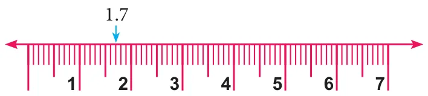
(ii)
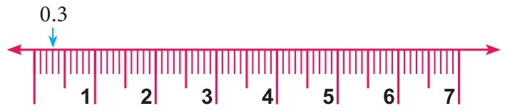
(iii)
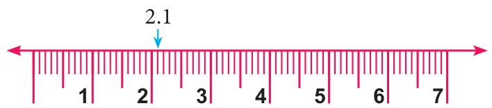
3. (i) 3 and 4 (ii) 2 and 3 (iii) 0 and 1
4. (i) 3.2 (ii) 6.5 (iii) 2.1
5. (i) 25.03 (ii) 7.01 (iii) 5.6
Objective type questions
6. (iii) 1 and 2 7. (i) 4.5
Exercise 1.5
1. (i)
| H | T | O | Tenths | Hundredths |
|---|---|---|---|---|
| 2 | 4 | 7 | 3 | 6 |
(ii)
| H | T | O | Tenths | Hundredths | Thousandths |
|---|---|---|---|---|---|
| 1 | 3 | 2 | 1 | 0 | 5 |
2. (i) 305.792 (ii) 1432.67 3. (i) 0.888 (ii) 23.915
4. \(C\) is the winner (15.6 s) 5. (i) \(\frac{117}{5}\) (ii) \(\frac{46301}{1000}\)
6. (i) 0.256 km (ii) 4.567 km 7. Boys=0.52; Girls=0.48
Challenge problems
8. (i) ₹809.99 (ii) ₹147.70 9. (i) 13.28 m (ii) 4.19 m
10. (i) 8.30 m (ii) 24.200 km
11. (i) 0.0023 (ii) 4.21 (iii) 3.7 12. (i) \(\frac{17}{8}\) (ii) \(\frac{1}{2000}\)
13.
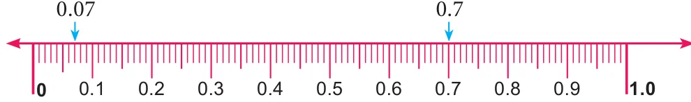
14. (i) four and nine tenths (ii) Two hundred and twenty (iii) seven tenths (iv) Eighty six and three tenths
15. (i) 0 and 1 (ii) 3 and 4 (iii) 3 and 4 (iv) 2 and 3 (v) 1 and 2 (vi) 1 and 2
16. 0.1 km
2. Measurements
Exercise 2.1
1. (i) \(d = 30\) cm; \(c = 94.28\) cm (ii) \(r = 280\) cm; \(d = 560\) cm (iii) \(r = 12\) m; \(c = 75.42\) m
2. (i) 220 cm (ii) 176 m (iii) 88 m
3. (i) 308 cm (ii) 572 mm 4. 13.2 m 5. 660 m
6. 4400 m 7. 30 frames 8. ₹59,400
Objective type questions
9. (i) \(2\pi r\) units 10. (iv) radius 11. (i) 41 cm
12. (ii) more than three times of its diameter
Exercise 2.2
1. 8662.5 \(\text{cm}^{2}\) 2. 3.581 \(\text{m}^{2}\) 3. \(r = 21\) cm; \(d = 42\) cm 4. 9856 \(\text{m}^{2}\)
5. 75.46 \(\text{m}^{2}\) 6. \(r = 28\) m 7. 12474 \(\text{cm}^{2}\) 8. ₹282975 9. ₹2772
Objective type questions
10. (ii) \(\pi r^{2}\) 11. (i) 2:1 12. (iv) \(\pi n^{2}\)
Exercise 2.3
1. 2200 \(\text{cm}^{2}\) 2. 1386 \(\text{m}^{2}\) 3. 9944 \(\text{cm}^{2}\) 4. ₹95700 5. 1200 \(\text{m}^{2}\) 6. 60 \(\text{m}^{2}\)
7. 4.96 \(\text{m}^{2}\) 8. (i) 74 \(\text{m}^{2}\) (ii) ₹888
Objective type questions
9. (i) \(\pi\left(R^{2} - r^{2}\right)\) sq.units 10. (ii) \((L \times B) - (l \times b)\) sq.units 11. (iii) \(R - r\)
Exercise 2.4
1. 28 cm 2. 84 m 3. 668 \(\text{m}^{2}\)
4. 49 m 5. (i) 196 \(\text{cm}^{2}\) (ii) 38.5 \(\text{cm}^{2}\) (iii) 42 \(\text{cm}^{2}\)
Challenge problems
6. 7 cm; 462 \(\text{cm}^{2}\) 7. 710 \(\text{m}^{2}\) 8. 30 cm; 10 cm
9. 7 m; 770 \(\text{m}^{2}\) 10. 2134 \(\text{m}^{2}\) 11. 264 \(\text{cm}^{2}\); 336 \(\text{cm}^{2}\)
12. (i) 53 \(\text{m}^{2}\) (ii) 247 \(\text{m}^{2}\) (iii) ₹530
3. Algebra
Exercise 3.1
1. (i) 14 power 9 (ii) \(p \times p \times p \times q \times q\) (iii) \(12^{17}\) (iv) 1
2. (i) false (ii) false (iii) true (iv) true (v) true
3. (i) 64 (ii) 121 (iii) 625 (iv) 729
4. (i) \(6^{4}\) (ii) \(t^{2}\) (iii) \(5^{2} \times 7^{3}\) (iv) \(2^{2} \times a^{2}\)
5. (i) \(2^{9}\) (ii) \(7^{3}\) (iii) \(3^{6}\) (iv) \(5^{5}\)
6. (i) \(6^{3}\) (ii) \(3^{5}\) (iii) \(2^{8}\)
7. (i) 3969 (ii) 144 (iii) 250000
8. (i) 16 (ii) 24 (iii) 8000
9. (i) \(3^{13}\) (ii) \(a^{14}\) (iii) \(7^{x+2}\) (iv) \(2^{2}\) (v) \(18^{4}\) (vi) \(6^{12}\) (vii) 1 (viii) \(27^{5}\) (ix) \(36^{y}\) (x) \(125^{6}\)
10. (i) 17 (ii) 23 (iii) 25 (iv) 1
11. (i) \(4^{11}\) (ii) \(3^{35}\) (iii) \(5^{5}\) (iv) 1 (v) \(16a^{3}b\)
Objective type questions
12. (i) \(a^{5}\) 13. (iv) \(2^{3} \times 3^{2}\) 14. (i) a 15. (iv) 20 16. (iii) \(2^{41}\)
Exercise 3.2
1. (i) 0 (ii) odd
2.
| Group A | Group B |
|---|---|
| (i) | (c) |
| (ii) | (d) |
| (iii) | (b) |
| (iv) | (f) |
| (v) | (a) |
| (vi) | (e) |
3. (i) 5 (ii) 1 (iii) 6 (iv) 0 (v) 9 (vi) 1 (vii) 4 (viii) 6
4. (i) 7 (ii) 1
Objective type questions
5. (ii) 5 6. (iv) 1 7. (i) 0
Exercise 3.3
1. (i) 11 (ii) 0 (iii) 3
2. (i) true (ii) false (iii) false (iv) true
3. (i) 2 (ii) 2 (iii) 5 (iv) 0 (v) 1
4. (i) 3 (ii) 2 (iii) 5 (iv) 3 (v) 5 5. \(-y^{3}x^{2}z\) and \(-5y^{3}x^{2}z\)
6. (i) \(19x - 6y\); 1 (ii) \(-k^{2} - 4k + 69\); 2 (iii) \(8m^{2}n + 2pq^{2}\); 3
7. (i) \(7x^{2} + 3xy + 12y^{2}\); 2 (ii) \(3a^{4} + a^{3} + 2a^{2}\); 4 (iii) \(9x^{2} - 11x - 8\); 2
Objective type questions
8. (iii) trinomial 9. (i) 7 10. (iii) 3
Exercise 3.4
1. \(m = 3\) 2. 6 3. 6 4. \(-1\) 5. 6 6. 36
Challenge problems
7. 65536 8. \(x = 3\) 9. 2 10. 2
11. 21 12. \(5x^{2} - 11x - 5\); 2 13. \(2x^{2} - 2xy + 4z^{2}\); 2
4. Geometry
Exercise 4.1
1. yes 2. cannot draw a triangle
3. (i) \(45^{\circ}\) (ii) \(62^{\circ}\) (iii) \(30^{\circ}\) (iv) \(17^{\circ}\) (v) \(18^{\circ}\) (vi) \(20^{\circ}\) (vii) \(24^{\circ}\) (viii) \(27^{\circ}\)
4. \(\angle A = 60^{\circ}\); \(\angle B = 40^{\circ}\) 5. \(360^{\circ}\) 6. \(45^{\circ}, 60^{\circ}, 75^{\circ}\)
7. \(55^{\circ}, 60^{\circ}, 65^{\circ}\) 8. \(30^{\circ}, 60^{\circ}, 90^{\circ}\) 9. \(\angle X = 60^{\circ}\); \(\angle Z = 48^{\circ}\)
10. \(\angle A = 29^{\circ}\); \(\angle C = 61^{\circ}\) 11. \(\angle M = 38^{\circ}\); \(\angle O = 52^{\circ}\) 12. (i) \(110^{\circ}\) (ii) \(11^{\circ}\)
13. \(21^{\circ}\) 14. \(110^{\circ}\) 15. \(120^{\circ}\)
Objective type questions
16. (ii) \(40^{\circ}, 60^{\circ}, 80^{\circ}\) 17. (iii) \(80^{\circ}, 35^{\circ}\) 18. (ii) \(68^{\circ}\)
19. (iii) \(x + y + z = 2(a + b + c)\) 20. (iii) \(35^{\circ}\) 21. (iii) \(130^{\circ}\) 22. (ii) \(65^{\circ}, 80^{\circ}\)
Exercise 4.2
1. Corresponding sides : \(AB, DE\); \(BC, EF\); \(AC, DF\)
Corresponding angles : \(\angle ABC, \angle DEF\); \(\angle BCA, \angle EFD\); \(\angle CAB, \angle FDE\)
2. (i) \(\overline{PQ} = \overline{LN}; \overline{PR} = \overline{LM}; \overline{RQ} = \overline{MN}\)
\(\angle RPQ = \angle NLM; \angle PQR = \angle LNM; \angle PRQ = \angle LMN\)
(ii) \(\overline{QR} = \overline{LM}; \overline{RP} = \overline{LN}; \overline{PQ} = \overline{MN}\)
\(\angle PQR = \angle LMN; \angle QRP = \angle MLN; \angle RPQ = \angle LNM\)
3. (i) Not corresponding angles (ii) Not corresponding angles (iii) corresponding angles (iv) Not corresponding sides (v) corresponding sides (vi) Not corresponding sides
4. (i) congruent triangles by SAS (ii) congruent triangles by SSS (iii) congruent triangles by AAA (iv) congruent triangles by RHS (v) congruent triangles by SSS (or) RHS (or) SAS
5.
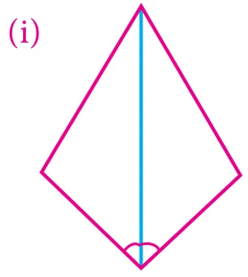
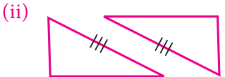
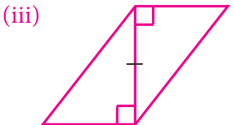
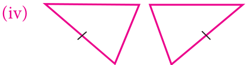
(v)
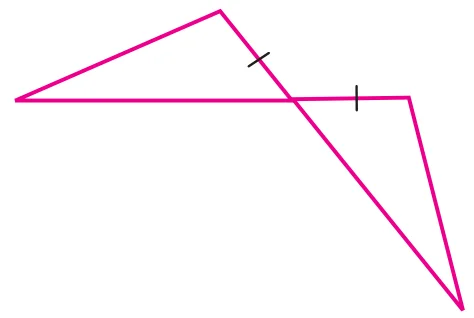
6. (i) SSS (ii) ASA (iii) RHS (iv) ASA (v) ASA (vi) SAS
Objective type questions
8. (iv) same shape and same size 9. (ii) superposition method
10. (iii) SSA rule 11. (iv) They should have the same length
12. (i) \(\angle ADB = \angle CDB; \angle ABD = \angle CBD; BD = BD\) 13. (ii) SAS property
Exercise 4.3
1. \(52^{\circ}, 52^{\circ}\) 2. Isoceles triangle 3. Right angled triangle
4. \(40^{\circ}, 70^{\circ}, 70^{\circ}\) 5. \(100^{\circ}\) 6. \(152^{\circ}\) 7. \(\angle O = 75^{\circ}\)
10. (SAS), \(\Delta CAB \cong \Delta EBD\); \(AC \parallel DE\)
Challenge problems
11. \(x = 30^{\circ}\) 12. \(x = 114^{\circ}\) 13. \(x = 34^{\circ}; y = 118^{\circ}\)
14. \(100^{\circ}\) 15. \(95^{\circ}\) 16. \(y = 137^{\circ}\)
5. Information Processing
Exercise 5.1
1.
| (i) | (d) |
| (ii) | (a) |
| (iii) | (e) |
| (iv) | (c) |
| (v) | (b) |
Objective type questions
2. (i) \(y = 4x\) 3. (iv) \(y = -3x\)
Exercise 5.2
1.
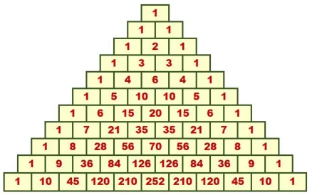
2.
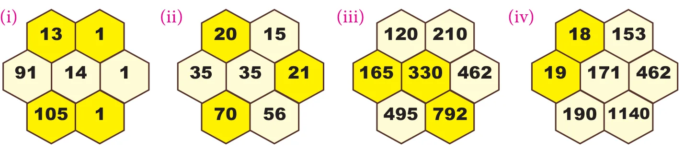
3.
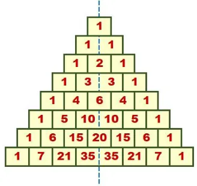
Objective type questions
4. (iv) 1,5,10,10,5,1 5. (ii) 4,10,20,... 6. (iii) 256
Exercise 5.3
1. (iii) \(y = x + 6\)
2.
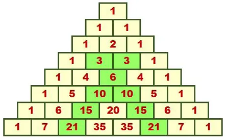
3. Five numbers in third slanting rows are 1, 3, 6, 10, 15 ; Their squares are 1, 9, 36, 100, 225.
Challenge Problems
4. (i)
| steps (x) | 1 | 2 | 3 | 4 |
|---|---|---|---|---|
| shapes (y) | 1 | 4 | 9 | 16 |
(ii)
| steps (x) | 1 | 2 | 3 | 4 | 5 |
|---|---|---|---|---|---|
| shapes (y) | 1 | 3 | 5 | 7 | 9 |
5. (i) \(1 \times 13 \times 66 = 11 \times 1 \times 78\) (ii) \(5 \times 21 \times 20 = 10 \times 6 \times 35\)
(iii) \(8 \times 45 \times 84 = 28 \times 9 \times 120\) (iv) \(56 \times 210 \times 126 = 70 \times 84 \times 252\)
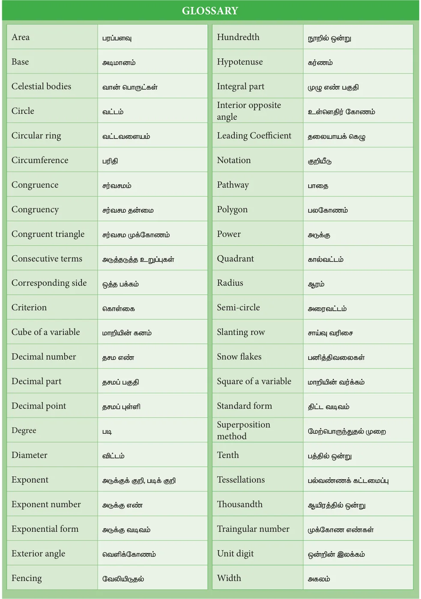
Secondary Mathematics - Class 7
Text Book Development Team
Reviewer
- Dr. R. Ramanujam,
Professor,
Institute of Mathematical Sciences, Taramani, Chennai.
Domain Expert
- Dr. C. Annal Deva Priyadarshini,
Asst. Professor, Department of Mathematics,
Madras Christian College,
Chennai
Academic Coordinator
- B.Tamilselvi,
Deputy Director,
SCERT,
Chennai .
Group in Charge
- Dr. V. Ramaprabha,
Senior Lecturer,
DIET, Tirur,
Tiruvallur Dt.
Coordinators
- D. Joshua Edison
Lecturer,
DIET, Kaliyampoondi,
Kanchipuram Dt. - M.K. Lalitha
B.T. Asst, GGHSS,
Katpadi, Vellore District
ICT Coordinator
- D. Vasuraj
PGT & HOD (Maths),
KRM Public School, Chennai
EMIS Technology Team
- R.M. Satheesh
State Coordinator Technical,
TN EMIS, Samagra Shiksha. - K.P. Sathya Narayana
IT Consultant,
TN EMIS, Samagra Shikaha - R. Arun Maruthi Selvan
Technical Project Consultant,
TN EMIS, Samagra Shiksha
Content Writers
- G.P. Senthilkumar,
B.T.Asst,
GHS, Eraivankadu, Vellore District. - M.J. Shanthi,
B.T.Asst, PUMS,
Kannankurichi, Salem Dt. - M. Palaniyappan,
B.T.Asst,
Sathappa GHSS, Nerkuppai,
Sivagangai Dt. - A.K.T. Santhamoorthy
B.T.Asst,
GHSS, Kolakkudi,
Tiruvannamalai Dt. - P. Malarvizhi
B.T.Asst, Chennai High School,
Strahans Road, Pattalam, Chennai.
Content Reader
- Dr. M.P. Jeyaraman,
Asst Professor, L.N. Govt Arts College,
Ponneri – 601 204.
Art and Design Team
Layout Artist
- Joy Graphics,
Chintadripet, Chennai - 02
Artist
- Prabu Raj D.T.M.
Drawing Teacher,
GHS, Manimangalam
Kanchipuram Dt.
Inhouse Qc
- Rajesh Thangappan
- Jerald Wilson
- Arun Kamaraj
Coordinator
- Ramesh munusamy
Typist
- A. Palanivel
Typist,
SCERT, Chennai. - R. Yogamalini
Typist
This book has been printed on 80 GSM
Elegant Maplitho paper
Printed by offset at :